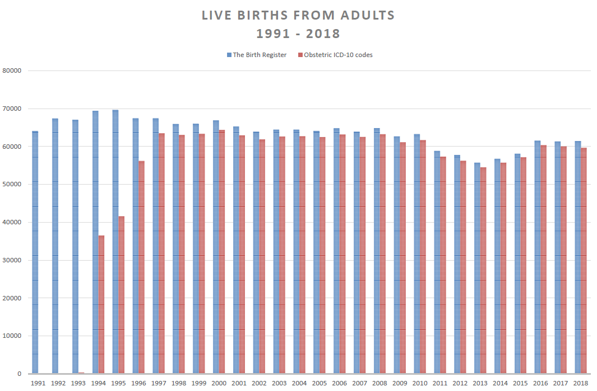

5 Discussion of methods
Before discussing the methodological design of the studies associated with the dissertation, this chapter first discusses algorithm design choices in OSDC and RSCD in light of discoveries made during development and implementation of the classifiers.
5.1 Development of diabetes classifier
Identification of diabetes cases and classification of their specific type in data from general-purpose healthcare registers faces several limitations. This section discusses issues and challenged identified during the development and implementation of diabetes classifiers in this PhD project. Future perspectives of register-based diabetes classification are discussed in Chapter 8.
5.1.1 Approaches to censoring gestational diabetes mellitus
In an early version of the OSDC, we discovered that when using all the available data on GLD purchases, including the earliest years of the National Prescription Register, a substantial proportion (approximately 7%) of individuals classified as having T1D were insulin non-users during the previous year. Some of these individuals participated in the national health survey, and none of them reported having diabetes in the data, although a few reported having previously had diabetes. This initially led to the index-date specific
However, pursuing this issue further showed that most of these cases were younger women with diabetes onset before 1997, which might indicate that censoring of GDM was insufficient during this period of time. Censoring of GDM relied on clinical obstetric coding in the National Patient Register to identify individual pregnancy windows, and a rudimentary validation of the number of births registered by codes in the National Patient Register against the number of annual births recorded in the National Birth Register was attempted. This showed that clinical obstetric coding was indeed lacking in the first few years after the adoption of ICD-10 coding in 1994, but appeared sufficient from 1997 onward, as shown in Figure 5.1.
Any algorithm censoring GDM using data from the National Patient Register is likely to include false-positive diabetes cases among women prior to 1997. The RSCD manages these cases (and other potentially misclassified cases) by retrospectively excluding individuals without any inclusion events 10 years prior to a given index date. While such a mechanism solves this issue in a cross-sectional study, it creates new problems, as study designs with dynamic index dates (e.g. longitudinal studies with case-specific index dates at the time of diabetes onset) are no longer possible with the algorithm.
 Births identified in the National Patient Register with obstetrical ICD-10 codes vs. registrations in the National Birth Register. Note the discrepancy of birth during 1994-1996 after adoption of the ICD-10 coding scheme in 1994.
5.1.2 Approaches to censoring polycystic ovary syndrome
In Denmark, women with PCOS are mainly diagnosed and treated in the primary care sector without any registration in the National Patient Register to assist researchers identify these patients. Metformin, a GLD, is used in the treatment of PCOS, and leads to inclusion of false-positive diabetes cases among women treated with metformin. As PCOS mainly affects younger women, censoring metformin purchases among women below an arbitrary age-cutoff is a possible solution.
In OSDC, we adopted the 40-year age-cutoff previously used in the Danish National Diabetes Register,1 and also censored metformin purchases in women where the indication code of the prescription was for PCOS. This approach over-censors purchases among younger women, but we expected these patients to be identified through inclusion based on HbA1c data instead.
The RSCD chose a very different approach to identify PCOS cases and censor metformin purchases, using data on purchases of contraceptives used in the treatment of PCOS, as well as any diagnoses of PCOS in the National Patient Register. This approach provides a more age-agnostic censoring criteria, and as contraceptives are the first-line treatment drugs of PCOS guidelines, metformin is unlikely to be prescribed without these. However, these contraceptives are also used in women with PCOS, which risks overcensoring.
Ultimately, the two different approaches to censoring PCOS likely had similar impact, since most differences in real-world performance between the algorithms were minor - as described in Chapter 4.
5.1.3 Approaches to classification of diabetes type
Without an accurate, population-wide marker of diabetes type in the register data, researchers are forced to classify diabetes type using indirect markers in the data instead. Algorithm design decision in this regard are based on assumptions - which may qualify as so-called expert clinical knowledge - and come with benefits and drawbacks. For example, for type-classification in OSDC, we chose to omit diagnoses from surgical departments, as we assumed that diagnoses from medical departments, particularly endocrinology departments, would be more accurate due to these departments providing specific care for T1D and T2D.
In OSDC, we deliberately chose to make classification of T1D cases more restrictive compared to T2D, as the T1D population is much smaller than the T2D population and therefore more vulnerable to bias from misclassification, while the T2D population is more robust due to its larger size. The algorithm specifying diabetes type reflects this, as all cases of T1D must pass separate checks on medication-purchases and hospital diagnoses, and failure in either check results in classification as T2D (refer to ?fig-osdc-type-flow).
As previously presented, around 10% of T1D cases in OSDC had purchased non-insulin GLD at one or more points in time. In RSCD version 1.0, which was implemented and validated in the first study of this PhD project, these would all be classified as T2D and omitted from the T1D population, lowering the sensitivity of T1D-classification. Recent revisions of RSCD addressed this by allowing cases with non-insulin GLD purchases in the first year after onset of diabetes to be classified as T1D.2
Concordance was high between the two algorithms in classification of diabetes of any type vs. no diabetes, and the different approaches to classifying diabetes type is likely the main cause of the performance differences observed between the two algorithms.
5.2 Study designs
All three studies associated with this dissertation were designed as observational, cross-sectional studies based on prospectively collected register data covered the entire adult population in Denmark. The first study also incorporated questionnaire data from the Health in Central Denmark survey to serve as the gold standard for validation.
This cross-sectional design is useful for assessing prevalence of an outcome or exposure at a particular point in time, and any associations between them. Compared to a longitudinal design, the major limitation of this design is the inability to establish temporal or causal relationships between exposures and outcomes. These limitations were not a concern in the context of this dissertation, as the aim was to map risks in migrants, rather than infer causality, and since the exposure (migrant origin) was defined at birth, long before any of the outcomes were assessed.
The use of nationwide register data enables the largest possible sample size and statistical power, with the drawback that the data is not collected nor validated for a specific research purpose.
The generalizability of the findings of this dissertation are discussed in the following sections.
5.3 Internal validity
5.3.1 Selection bias
Selection bias is a type of bias that may arise when the selection of participants into a study is not representative of the target population, which can lead to inaccurate or biased estimates of the association between exposure and outcome that do not apply to the target population.
In study I, validation was performed in a population of respondents to a survey, a design prone to selection bias. Invites to the survey were conditioned on being aged 18 to 74 years and classified as a diabetes case according to OSDC, or being sampled in a group matched by sex, age and municipality. The choice to subsample OSDC diabetes cases when deriving the study population compensated for the oversampling of OSDC cases compared to non-cases in the survey population, but did not change the other characteristics in the survey population. As a results, the study population contained fewer women and a skewed age distribution compared to a random sample of the general population - and a higher diabetes prevalence.
The accuracy of the classifiers may be different among individuals older than 75, and the predictive values will vary depending on diabetes prevalence. However, supplementary validation analyses performed in the National Health Survey, which contains a representative sample of the general population, provided results similar to those in the Health in Central Denmark survey, although the supplementary analyses were limited to classification of diabetes of any type vs. no diabetes - see Appendix C for details.
In addition to survey invites, non-response among those invited may also be a source of selection bias, as analyses were restricted to respondents. However, several factors suggest that this bias was limited, as response rates were high (>50%) in both the T1D, T2D and no-diabetes groups, and the three groups shared similar non-response patterns.3
The register-based design of studies II and III meant that data was available on the entire population, minimizing selection bias. Statistical analyses were performed as complete-case analyses, which omits individuals with missing data from analyses and may induce selection bias. In order avoid this, individuals with very short durations of residence on the index dates of the studies were excluded in order to allow time for data to be captured correctly. In addition, the variables included in analyses were chosen to minimize missing data, e.g. we omitted education level from analyses due to a substantial proportion of migrants missing this data.
Analyses of pharmacological treatment in study II and all analyses in study III were conditioned on individuals having an HbA1c or/and LDL-C level recorded, but this excluded no more than 2% of the study population and major bias due to this selection was unlikely. In study II, the analyses on pharmacological treatment were also conditioned on individuals still being alive and residing in Denmark at the end of the following year, which could induce selection bias. The alternative - leaving these individuals in the analyses - would likely have had a greater biasing effect, as any individual dying or emigrating before their first drug purchase in next the year would have resulted in their outcome being misclassified if they were in pharmacological treatment prior to the index date (as most individuals with an indication for treatment were).
5.3.2 Information bias
T2D was validated! Diabetes duration Migrant ethnicity based on country of origin is more accurate than race or continent, but does not capture ethnic differences within the countries of origin.
Pros and cons of algorithm design choices.
RLRR coverage, LDL-C in 2018
5.3.3 Confounding
Studies II and III mapped risks, not causal associations
5.4 External validity
5.4.1 Generalizability
Population-wide: representative of the Danish healthcare system and migrant populations in their current state. Risks are likely to be representative of other, similar healthcare systems and migrant populations found in other Nordic countries - but not in other contexts.
Migrant group characteristics, such as distribution of other covariables may provide different results between countries, as well as difference outcome prevalence in the native population.
Results generalize to migrants with short durations of stay, but not to descendants?
5.5 Analyses
Robust poisson regression provides more intuitive estimates of relative risk than logistic regression in studies where the outcome of interest is not rare.